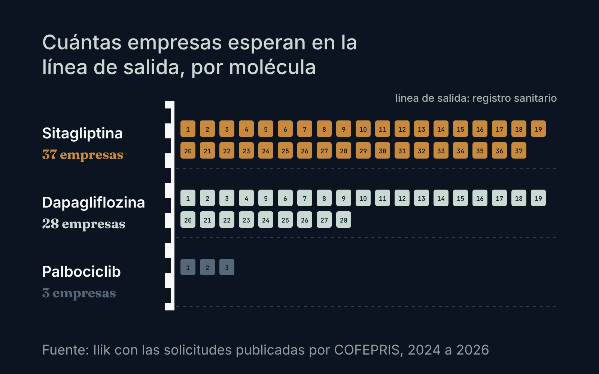
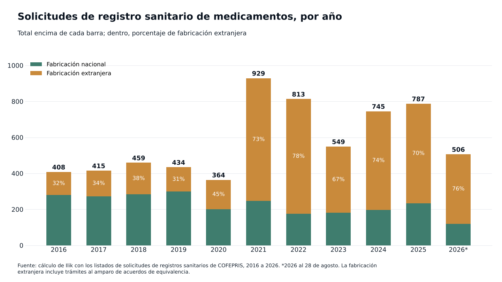
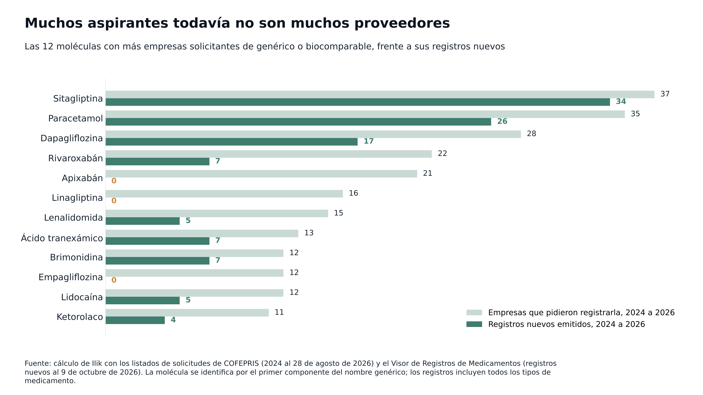
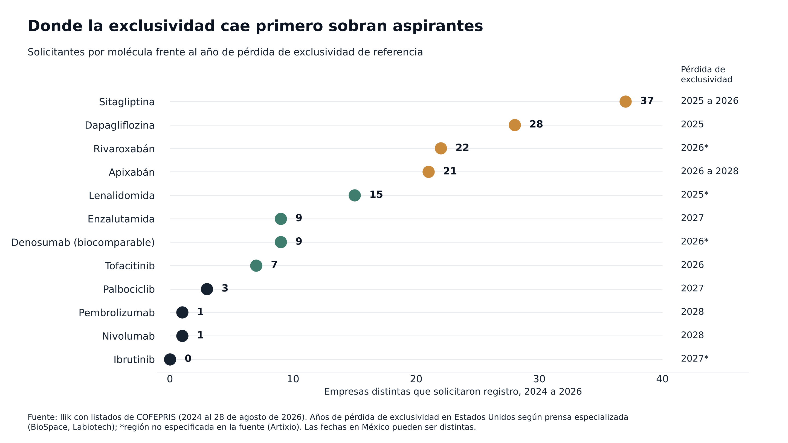

Observatorio / Medicamentos y COFEPRIS
Investigación¿Qué medicamento tendrá competencia en México después de sitagliptina?
Las solicitudes de registro sanitario que recibe COFEPRIS dan una señal temprana de qué medicamentos tendrán varios proveedores en los próximos años y cuáles seguirán con uno solo. Para quien compra en un hospital privado, funcionan como un calendario de negociación.

Entre enero de 2024 y agosto de 2026, 37 empresas distintas pidieron a COFEPRIS registrar un genérico de sitagliptina, un antidiabético oral. Otras 28 pidieron registrar dapagliflozina; 22, rivaroxabán, y 21, apixabán. Las cuatro comparten un rasgo: en Estados Unidos, su exclusividad venció hace poco o está por vencer.12
Si su hospital compra alguna de esas moléculas a un solo proveedor, esa lista le interesa. Indica dónde es probable que aparezca competencia en uno o dos años y, por contraste, dónde no hay nadie formado para entrar.
Lo sabemos porque COFEPRIS publica cada año el listado de solicitudes de registro sanitario de medicamentos que recibe, para que terceros, como los titulares de patentes, puedan oponerse.1 Juntamos los 22 listados disponibles de 2016 a 2026: 6,409 solicitudes, con fecha de ingreso, empresa solicitante, molécula y tipo de trámite. Son avisos, no un padrón exhaustivo, y pueden faltar solicitudes. Aun así, es de las pocas ventanas públicas que dejan ver lo que viene antes de que llegue al anaquel.
En 2021 las solicitudes se duplicaron y no han vuelto al nivel anterior
De 2016 a 2020, los listados de COFEPRIS registraban entre 364 y 459 solicitudes al año. En 2021 saltaron a 929 y desde entonces no han regresado al nivel anterior: en 2025 fueron 787. En 2026, al 28 de agosto, van 506, contra 439 en el mismo tramo de 2025; solo 2022 tuvo más en esos meses.1

El cambio de fondo está en dónde se fabrica lo que se solicita. En 2016, 32% de las solicitudes eran de fabricación extranjera. Desde 2021 la proporción oscila entre 67% y 78% cada año, y en 2026 va en 76%.1
Los registros otorgados también suben. Del 1 de enero al 9 de octubre de 2026, COFEPRIS emitió cerca de 50% más registros nuevos de medicamentos que en el mismo periodo de 2025, según nuestro cálculo con la base completa de su Visor de Registros.3
Nadie controla la puerta de entrada
Entre 2024 y 2026 sometieron solicitudes 275 empresas y ninguna llega a 4% del total.1 Con un índice de concentración (HHI) de 114 puntos, muy lejos de los 1,000 donde las autoridades de competencia de Estados Unidos empiezan a hablar de concentración moderada, la puerta de entrada está abierta para cualquiera.4
Casi nueve de cada diez solicitudes son de genéricos. Metabolismo, oncología y sistema nervioso concentran cerca de la mitad.
Las solicitudes siguen el calendario de las patentes
Cuando decenas de empresas piden registrar la misma molécula en pocos meses, lo común es que haya una patente que acaba de vencer o está por hacerlo. No siempre: el paracetamol, sin patente, está entre las moléculas con más solicitudes.

Sitagliptina perdió su exclusividad en Estados Unidos entre 2025 y 2026, según la fuente que se consulte, y dapagliflozina en 2025.2 Para rivaroxabán y apixabán, dos anticoagulantes orales de nueva generación, las fuentes dan fechas de 2026 a 2028.2 Apixabán fue el cuarto medicamento más vendido del mundo en 2024.9 Este año aparecieron dos señales nuevas: semaglutida pasó de cero o una solicitud al año a siete, y sacubitrilo con valsartán, de entre cero y dos a ocho.1
En el otro extremo están moléculas cuya exclusividad vence pronto y que casi nadie ha pedido todavía. Tofacitinib, con vencimiento en Estados Unidos a mediados de 2026, tiene siete solicitantes. Palbociclib (2027) tiene tres. Pembrolizumab, el medicamento más vendido del mundo en 2024,9 y nivolumab tienen un solicitante cada uno, con vencimientos en Estados Unidos en 2028. Ibrutinib no registra ninguna solicitud desde 2022.2

Una advertencia antes de usar estas fechas: son de Estados Unidos o de fuentes que no precisan la región, y en México pueden ser distintas. Desde finales de marzo de 2026, el IMPI y COFEPRIS operan una plataforma de vinculación que permite consultar, entre otras cosas, las patentes por vencer; ahí conviene confirmar cada molécula antes de tomar una decisión.5
Entre la solicitud y el descuento pasan años
En teoría, cada competidor nuevo empuja el precio hacia abajo. La FDA lo midió en Estados Unidos con precios promedio de fabricante: con un solo genérico en el mercado, su precio queda alrededor de 39% abajo del que tenía la marca antes de la entrada de genéricos; con cuatro, cerca de 79% abajo, y con seis o más, la reducción pasa de 95%.6
En México la caída ha sido más lenta. La COFECE encontró en 2017 que, dos años después de su entrada, el primer genérico costaba en promedio 28% menos que el original, contra 40% en la Unión Europea, y estimó que la falta de competencia les costaba a los consumidores más de 2,500 millones de pesos al año.7
Además, 37 solicitudes no equivalen a 37 proveedores. Para saber cuánto de cada ola ya se volvió competencia real, cruzamos las solicitudes con los registros nuevos emitidos desde 2024.3
Sitagliptina es el caso de una ola que ya llegó: 34 registros nuevos a nombre de 24 titulares distintos. Dapagliflozina va a medio camino, con 17 registros y 14 titulares.
Otras moléculas tienen la fila formada y la puerta todavía cerrada. Linagliptina tiene 16 empresas solicitantes y empagliflozina 12, pero ninguna de las dos suma un registro nuevo desde 2024; en toda la base de COFEPRIS, sus registros están a nombre de un solo titular. Apixabán tiene 21 aspirantes y tampoco suma registros nuevos desde 2024; los vigentes son el original y dos genéricos registrados en 2023.
| Molécula | Empresas solicitantes | Registros nuevos | Titulares distintos | Registros con titular en México |
|---|---|---|---|---|
| Sitagliptina | 37 | 34 | 24 | 50% |
| Paracetamol | 35 | 26 | 22 | 81% |
| Dapagliflozina | 28 | 17 | 14 | 24% |
| Rivaroxabán | 22 | 7 | 7 | 43% |
| Apixabán | 21 | 0 | 0 | Sin registros nuevos |
| Linagliptina | 16 | 0 | 0 | Sin registros nuevos |
| Lenalidomida | 15 | 5 | 5 | 60% |
| Ácido tranexámico | 13 | 7 | 7 | 57% |
| Brimonidina | 12 | 7 | 5 | 71% |
| Empagliflozina | 12 | 0 | 0 | Sin registros nuevos |
| Lidocaína | 12 | 5 | 4 | 100% |
| Ketorolaco | 11 | 4 | 4 | 50% |
Empresas que pidieron registrar un genérico o biocomparable de 2024 al 28 de agosto de 2026, y registros nuevos de cualquier tipo de 2024 al 9 de octubre de 2026. La molécula se identifica por el primer componente del nombre genérico.
No todas las solicitudes llegan a registro: según cómo se cuente, lo logra entre una cuarta parte y casi la mitad de las de 2021 a 2024. Y llegar toma tiempo.
Tener registro tampoco es estar en el anaquel. Para que un hospital privado vea el efecto en su precio, el producto tiene que fabricarse, distribuirse y llegarle como oferta. La compra pública juega con otras reglas: según Expansión, la compra consolidada de 2027 y 2028 solo admite producto nacional o de países con tratado de libre comercio vigente, lo que parece dejar fuera el producto terminado de India y China.8 Qué efecto tendrá eso en la oferta al sector privado no lo sabemos todavía.
Lo que esto significa para quien dirige las finanzas de un hospital
Una molécula con 20 o 30 solicitantes nuevos probablemente tendrá varios proveedores con registro en uno o dos años. Si el hospital hoy se la compra a uno solo, al precio de cuando no había competencia, vale la pena preparar desde ahora la cotización o la licitación que aproveche esa entrada.
Con uno o dos solicitantes, lo más probable es que la molécula siga siendo de fuente única por un buen rato. Ahí lo que se negocia es el abasto antes que el precio: contratos de suministro, inventario de seguridad y una alternativa terapéutica definida por el comité clínico.
Cualquiera de los dos caminos empieza igual. El hospital necesita saber cuánto compra de cada molécula, a quién y a qué precio. Con ese mapa puede cruzar su propio gasto contra la tabla de solicitudes y decidir qué contratos reabrir primero. Sin él, cuando lleguen los nuevos proveedores, el hospital corre el riesgo de seguir pagando el precio viejo sin darse cuenta.
Lo que no se mide, se paga de más.
Nota metodológica
Juntamos los 22 listados de solicitudes de registro sanitario de medicamentos alopáticos que COFEPRIS publica para 2016 a 2026 (por año, uno de genéricos y biocomparables y otro del resto de alopáticos), consultados el 15 de octubre de 2026; el de 2026 está actualizado al 31 de agosto. Son avisos para que terceros se opongan por patentes y pueden no incluir todas las solicitudes que recibe la comisión. El tipo de trámite y el lugar de fabricación salen del texto de la modalidad de cada solicitud. En las cifras por año y en la figura 1, la fabricación extranjera incluye los trámites al amparo de acuerdos de equivalencia; en la cifra por línea terapéutica, solo la fabricación extranjera directa. La línea terapéutica se asignó por molécula con la clasificación ATC de la base de registros de COFEPRIS. Contamos empresas distintas por razón social, sin agrupar filiales de un mismo grupo. Una solicitud de 2021 a 2024 cuenta como llegada a registro si existe un registro nuevo de la misma molécula, emitido en los cuatro años siguientes, a nombre de la empresa solicitante (24%) o con ella como distribuidora (45%). En la tabla por molécula, la molécula se identifica por el primer componente del nombre genérico y los registros nuevos incluyen cualquier tipo de medicamento. Las fechas de patente provienen de prensa especializada y se refieren a Estados Unidos salvo que se indique otra cosa. La base de datos completa está disponible a solicitud.
Fuentes
- COFEPRIS. Solicitudes de Registros Sanitarios, listados de medicamentos genéricos y biocomparables y del resto de alopáticos, 2016 a 2026. Ver en www.gob.mx ↩
- Fechas de pérdida de exclusividad: BioSpace, "5 pharma powerhouses facing massive patent cliffs"; Labiotech, "Pharma patent cliff"; Artixio, "Patent expiry alert: drugs expected to lose protection in the next five years". Ver en www.biospace.com Ver en labiotech.eu Ver en www.artixio.com ↩
- COFEPRIS. Visor de Registros de Medicamentos, base completa al 12 de octubre de 2026. Ver en registros.cofepris.gob.mx ↩
- U.S. Department of Justice y Federal Trade Commission. Merger Guidelines, 2023, sección 2.1; resumen de umbrales en. Ver en www.justice.gov ↩
- Basham, Ringe y Correa, "Gobierno de México habilita la plataforma electrónica de vinculación IMPI-COFEPRIS", 30 de marzo de 2026; Excélsior, "IMPI y COFEPRIS presentan plataforma para transparentar patentes y registros". Ver en basham.com.mx Ver en www.excelsior.com.mx ↩
- U.S. Food and Drug Administration. Generic Competition and Drug Prices: New Evidence Linking Greater Generic Competition and Lower Generic Drug Prices, diciembre de 2019. Ver en www.fda.gov ↩
- COFECE, estudio de competencia en los mercados de medicamentos con patentes vencidas, 2017, reproducido por Salud y Fármacos. Ver en www.saludyfarmacos.org ↩
- Expansión Política, 12 de septiembre de 2026. Ver en politica.expansion.mx ↩
- BioSpace. "10 best-selling drugs of 2024 rake in billions amid exclusivity threats", 5 de marzo de 2025. Ver en www.biospace.com ↩

Fundador de Ilik. Estadístico de formación, con más de ocho años al frente de la inteligencia comercial del canal hospitalario privado en la industria farmacéutica.